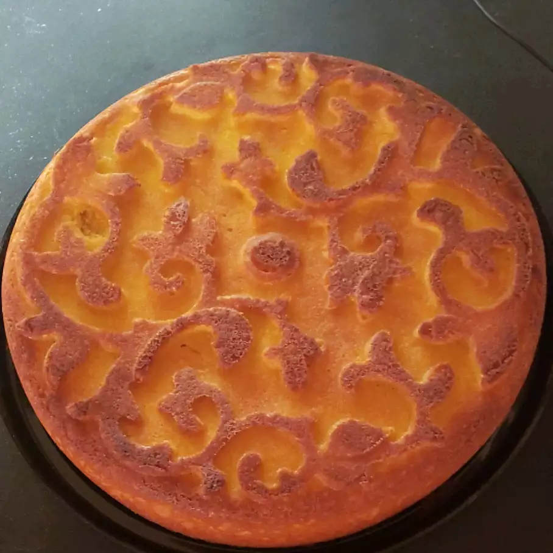

Victoria Sponge Cake

Description
A Victoria Sponge is a well known classic - here's how to make Queen Vic's favourite dessert!
Ingredients
- 100g self raising flour
- 100g butter, softened
- 100g caster sugar
- 2 eggs
- 1 teaspoon vanilla extract
- 50g icing sugar (to dust)
Method
- Sift the flour into a medium bowl and set aside.
- Beat butter and sugar with an electric mixer until light and fluffy. The mixture should be noticeably lighter in color. Add room-temperature eggs one at a time, allowing each egg to blend into butter mixture before adding the next. Beat in vanilla. Pour in the flour, mixing until just incorporated. Pour batter into prepared pan.
- Bake in the preheated oven until a toothpick inserted in the center comes out clean, about 20 minutes. Cool the cake in the pan for 10 minutes, then turn the cake out onto a wire rack to cool completely.
- This cake can be served as is, just dusted with confectioners' sugar. Alternately, cut the cake in half horizontally and sandwich the layers together with jam or custard.